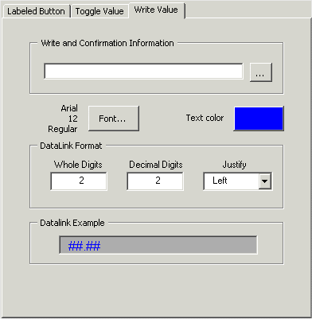

Configure Write Value tab
The Write Value (Numeric Datalink) is used to write a runtime-entered numeric value to a parameter. A typical use might be to tune a trip limit in a voter function block; for example, to change the CV field of the floating point TRIP_LIM parameter.
If no object is selected when the SIS Data Entry Expert is invoked and the Write Value tab is used, it creates a numeric datalink on a picture and creates a click-event script for a numeric datalink. Otherwise, the SIS Data Entry Expert creates a click-event script for the selected SIS object. If a non-SIS object is selected, this is the only tab available on the SIS Data Entry Expert dialog.
If Electronic Signature is enabled for the parameter, the Electronic Signature dialog appears when the Enter button is selected in Run mode. When the Electronic Signature is successfully entered, or if Electronic Signature is not enabled, the confirmation dialog is displayed. The operator must then confirm the write request.
Select the Write Value tab to configure the write value.

The SIS Data Entry Expert prompts for the following:
The full path of the parameter to be written.
The format for the numeric datalink (disabled if an object is selected). Specify 0 to 7 for the number of Whole Digits and Decimal Digits to be displayed. The font and color of the datalink can be changed.
Datalink Example field showing how the datalink will appear on the graphic.
The Write and Confirmation Information text displayed on the confirmation dialog. This can be a string or a tilde character followed by the name of a variable object. The string can be up to 300 characters and contain any keyboard character except double quote marks ("). Strings can also contain %P, which is replaced in Run mode with the value from the %P Parameter; for example, Do You Want to Reset the %P?. When the string is displayed in Run mode, %P is substituted with the value of the parameter defined by %P. Use the browse button to select a variable.
The full path of the %P parameter (optional). This option is used in the Write and Confirmation Information field and is replaced in Run mode with the value of the %P Parameter.
The user must select the Write Value tab on the SIS Data Entry Expert dialog to see the fields associated with the Write Value. Once the required fields are configured, click OK to create the datalink on the picture.